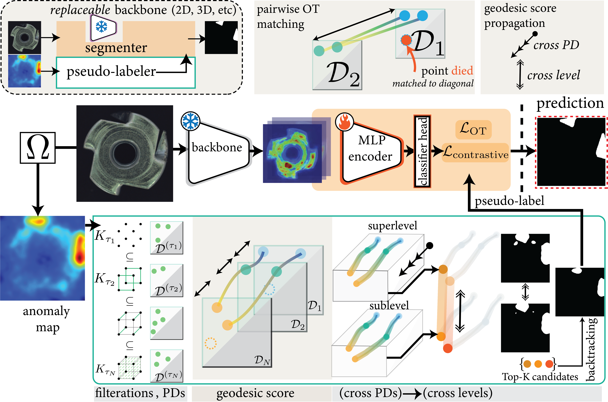
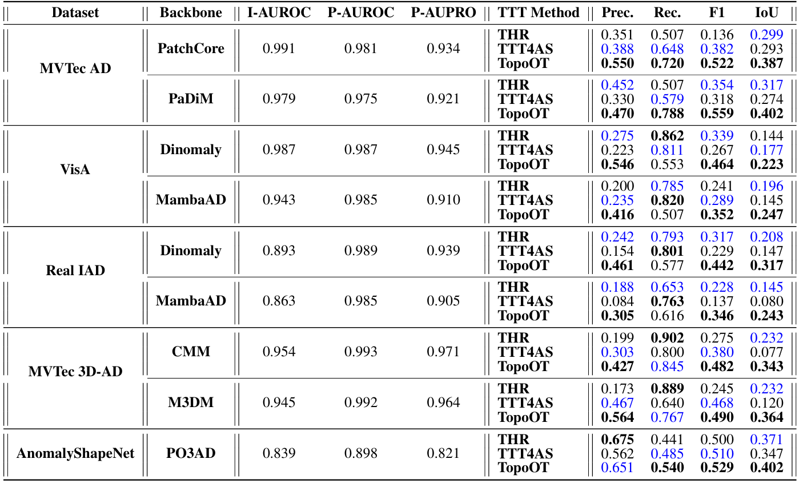
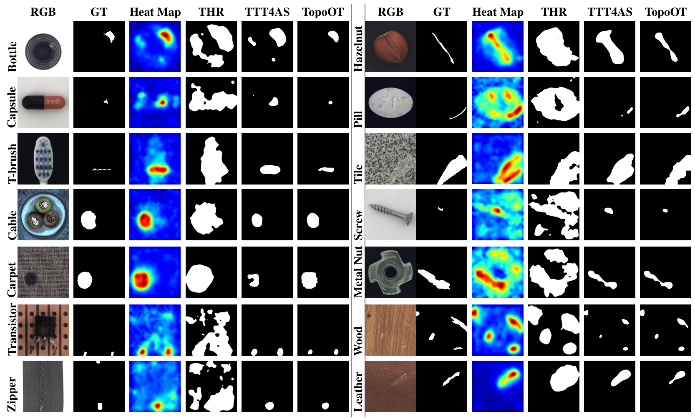
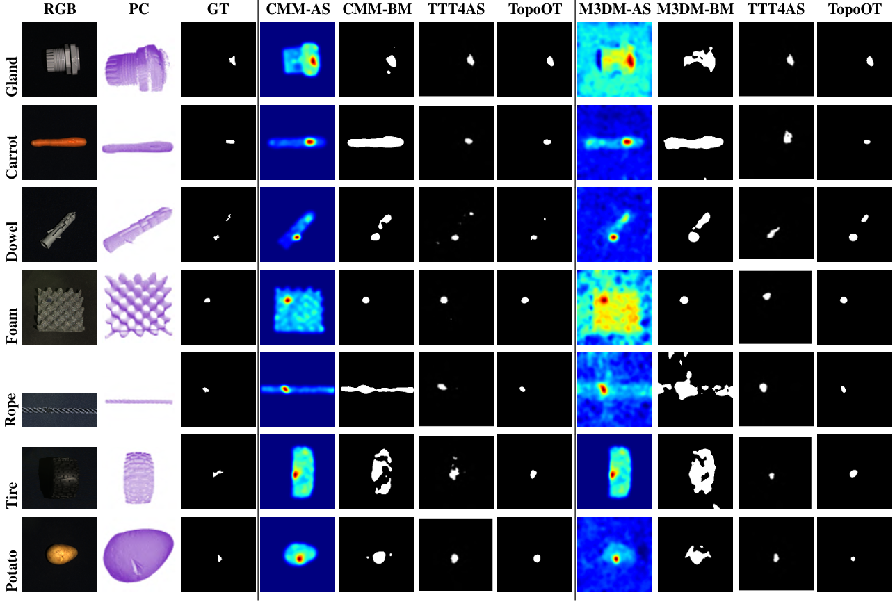

Corresponding Author: Ali Zia (A.Zia@latrobe.edu.au)
Acknowledgment: This work was supported by La Trobe University, Melbourne, Australia, for providing financial support and research resources.
Deep topological data analysis (TDA) offers a principled framework for capturing structural invariants such as connectivity and cycles that persist across scales, making it a natural fit for anomaly segmentation (AS). Unlike threshold-based binarisation, which produces brittle masks under distribution shift, TDA allows anomalies to be characterised as disruptions to global structure rather than local fluctuations. We introduce TopoOT, a topology-aware optimal transport (OT) framework that integrates multi-filtration persistence diagrams with test-time adaptation (TTA). Our key innovation is Optimal Transport Chaining, which sequentially aligns persistence diagrams (PDs) across thresholds and filtrations, yielding geodesic stability scores that identify features consistently preserved across scales. These stability-aware pseudo-labels supervise a lightweight head trained online with OT-consistency and contrastive objectives, ensuring robust adaptation under domain shift. Across standard 2D and 3D anomaly detection benchmarks, TopoOT achieves state-of-the-art performance, outperforming the most competitive methods by up to +24.1% mean F1 on 2D datasets and +10.2% on 3D anomaly segmentation benchmarks.

TopoOT Test-time Training for Anomaly Segmentation. (Top Left) pipeline simplified view. (Bottom) detailed view. TopoOT replaces conventional thresholding by stabilising anomaly evidence via cross-PD OT matching within each filtration, then fusing sub- and super-level scores with cross-level OT. The resulting global scores yield Top-K pseudo-labels that supervise a lightweight head for final segmentation.

Comparison of binary segmentation results. Best results in bold; second-best in blue.

Qualitative comparison of various anomaly detection methods for different objects using bacbbone PatchCore on 2D MvTec AD dataset.

Qualitative comparison of AD&S methods for different objects using on 3D MvTec AD Dataset.